<div class="image-content" [ngStyle]="{'background-image':'url('+image+')'}">

    <div *ngIf="collapsed" class="image-mask" (click)="onImagePress()">
        
    </div>

    <div *ngIf="!collapsed" class="selected-mask" (click)="onImagePress()">
        
    </div>
</div>